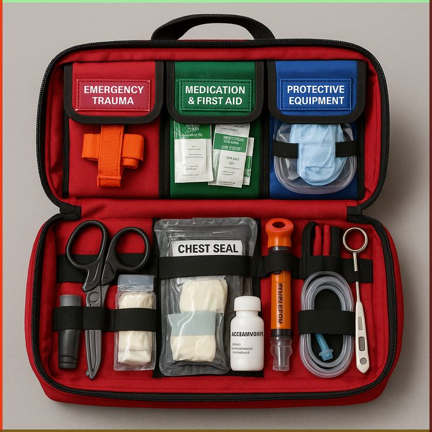

Every household, school, and workplace should have a well-stocked first aid kit readily available. Disasters and accidents don't schedule appointments.
Having the right supplies within arm's reach allows for an immediate response to minor injuries and helps prevent severe complications while waiting for medical care.

Check your kit supplies
every 6 months.
Build your emergency response kit using these four essential categories to ensure you are prepared for any situation.